Gioco
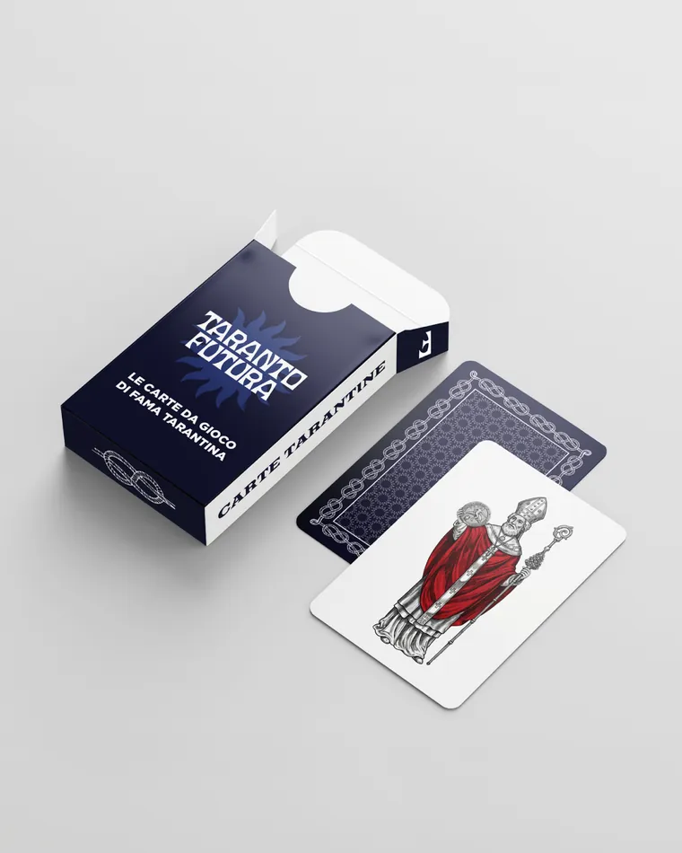
Carte Tarantine
Mazzo da 40 carte da gioco tradizionali rivisitate con estetica e simbolismi futuristi.
15,00 €
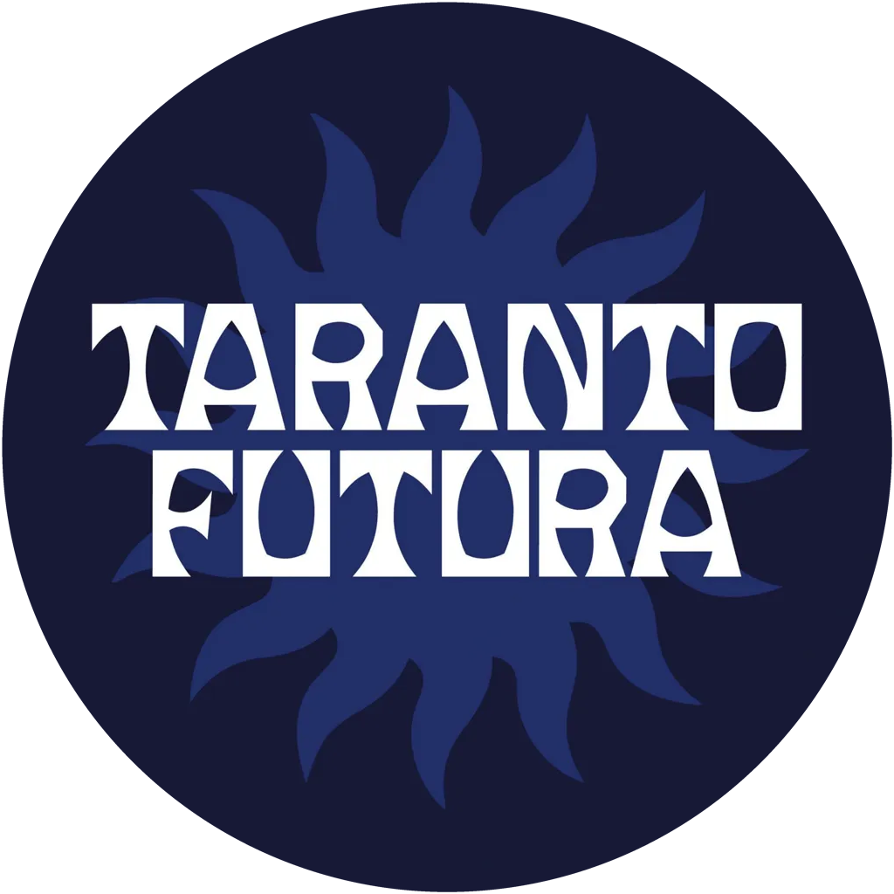
Taranto FuturaPer anni di Taranto abbiamo sentito raccontare sempre le stesse cose: quello che non funziona, le occasioni perse, i giovani che vanno via.
È una città complicata, certo. Sarebbe inutile fingere il contrario.
Ma non abbiamo la presunzione di salvarla, e non crediamo nelle formule magiche. Crediamo che a un certo punto devi smettere di aspettare e iniziare a muoverti.
Tutto è partito da uno che ha detto:
ma perché questa cosa non la facciamo noi?
Ogni cosa nasce con qualcuno che sta qui e fa le cose sul serio.
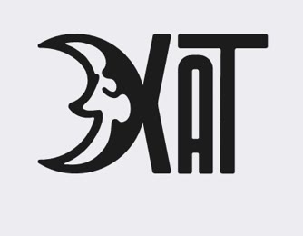
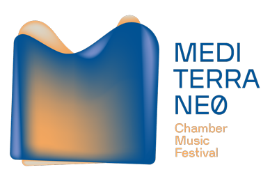
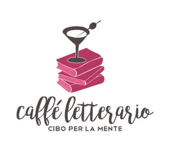
Per entrare in lista, proporre una collaborazione o chiedere di un pezzo del banco.
Ogni pezzo esce in tiratura limitata. Aggiungi al carrello, mandaci la richiesta: ti rispondiamo con disponibilità e modo di consegna, e chiudiamo tutto in DM su Instagram o via email. Nessun pagamento passa da questo sito.

Mazzo da 40 carte da gioco tradizionali rivisitate con estetica e simbolismi futuristi.
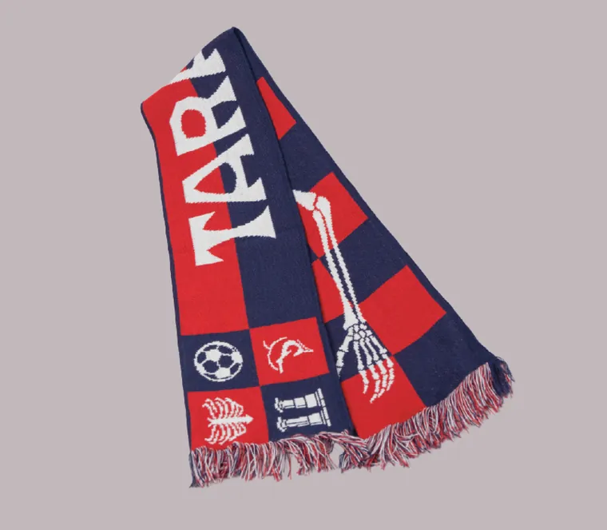
Sciarpa jacquard in maglia acrilica con pattern grafico e motivo a fregio ionico.
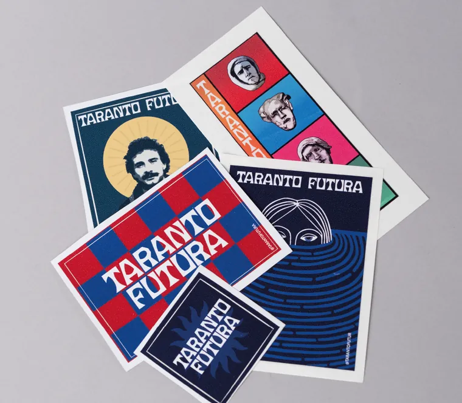
Set di adesivi sagomati in vinile impermeabile con illustrazioni e fregi classici.
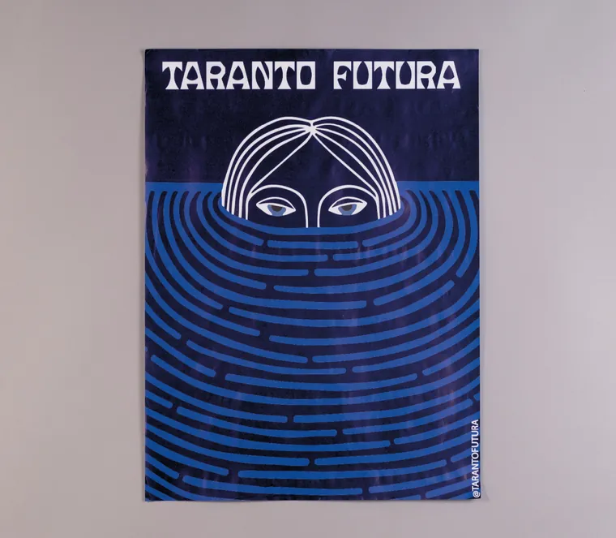
Stampa grafica in formato A3 su carta opaca ad alta grammatura 250g.
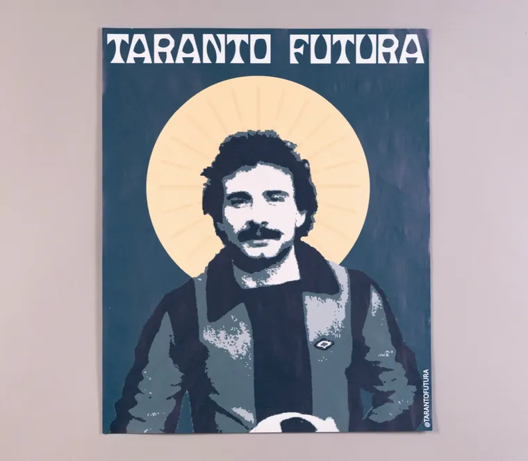
Locandina artistica celebrativa in edizione limitata per la notte di Sant'Erasmo.
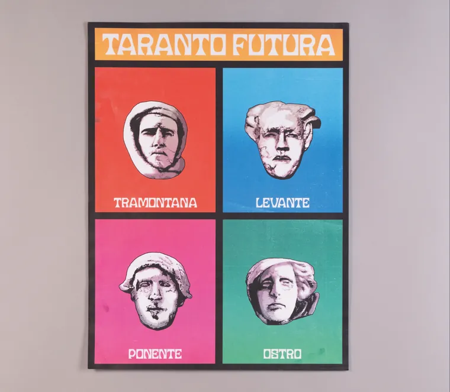
Grafica vettoriale minimale e dettagli d'archivio ispirati ai venti del Jonio.
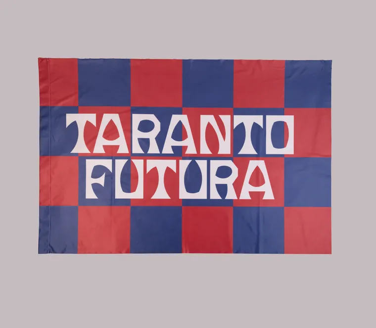
Bandiera in tessuto ad alta resistenza con logo e simboli ufficiali del collettivo.
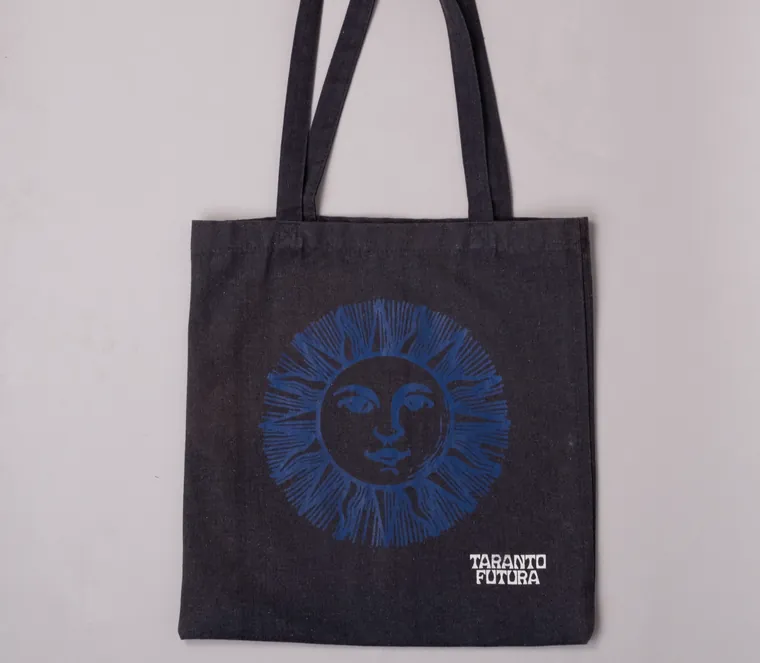
Borsa in cotone naturale 100% con stampa serigrafica ad alta definizione.
Hai una foto di quella sera? Mandacela.
tarantofutura3@gmail.comCosa facciamo per la città
Cosa facciamo per la città
Ogni pezzo nasce da una cosa di qua: una leggenda, un attrezzo, un vento. Qui c’è il perché. Comprarli si compra dal catalogo.
Quaranta carte da gioco tradizionali. Al posto di coppe e denari, sette figure che a Taranto si conoscono senza bisogno di spiegarle.
Maglia acrilica jacquard, rosso e blu a scacchi. La forma è quella da curva: i simboli dentro sono di qua.
Stampa A3 su carta opaca 250 grammi. Una faccia che sta per metà sotto.
Stampa A3. Quattro venti, quattro facce di marmo prese dai musei e rimesse a colori.
Stampa A3 in edizione limitata, per la notte di Sant’Erasmo.
Un nostro pezzo
Quaranta carte da gioco tradizionali. Al posto di coppe e denari, sette figure che a Taranto si conoscono senza bisogno di spiegarle.
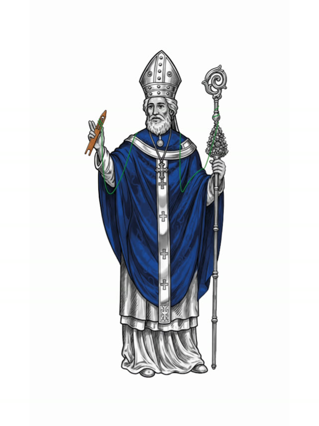
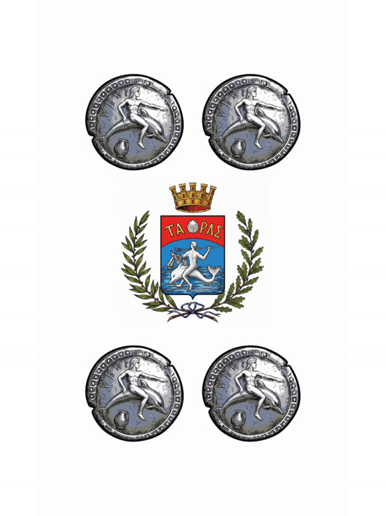
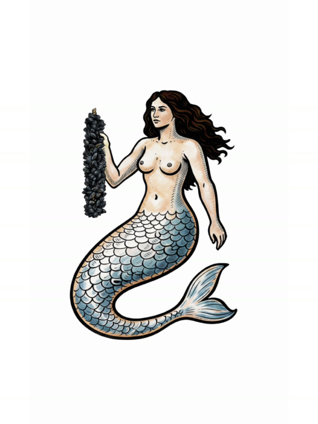
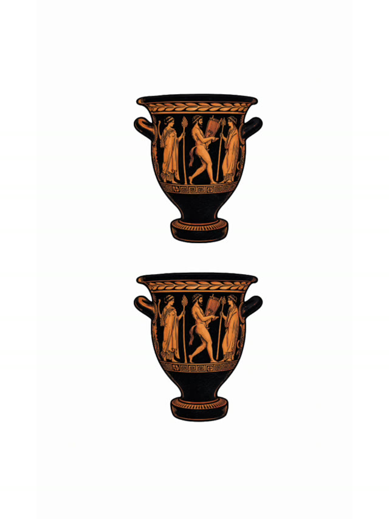
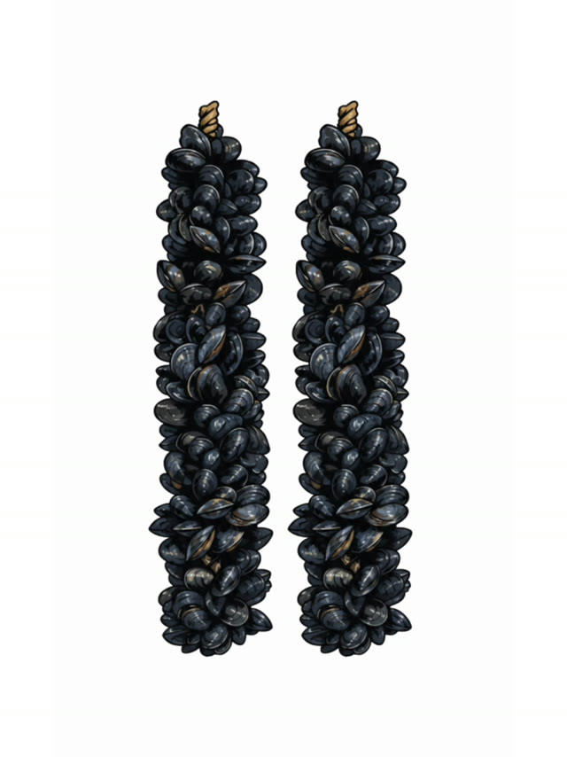
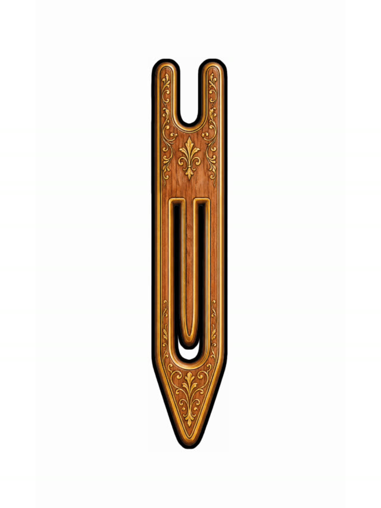
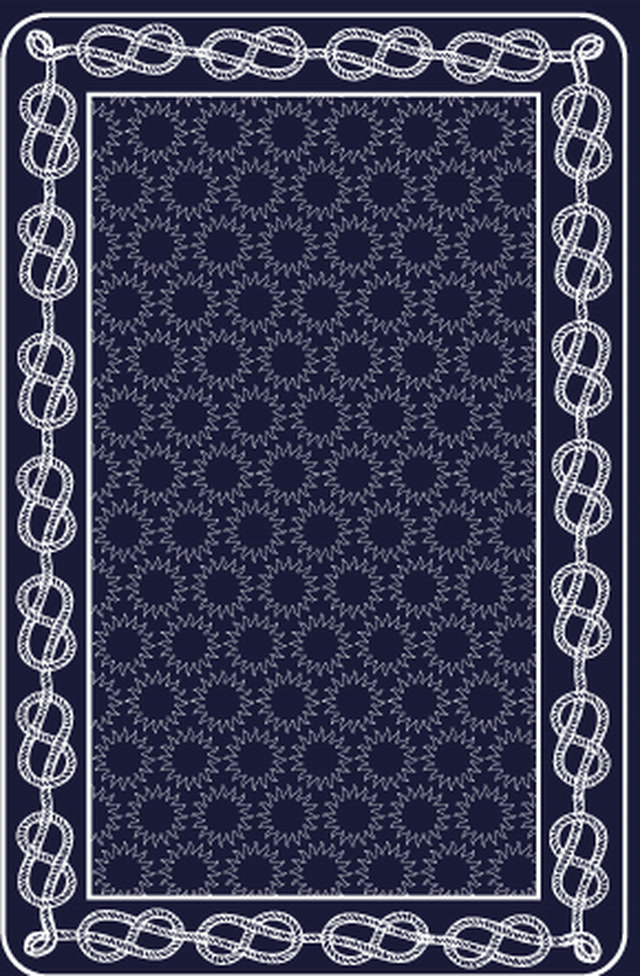
Il vescovo irlandese che passa di qui e resta. La leggenda dice che getto' il suo anello nel Mar Piccolo per placare la tempesta: dove cadde si apri' un occhio d'acqua dolce, e da allora le citare sorgono li'.
Il figlio di Poseidone arriva a cavallo di un delfino e fonda la citta'. Sta sulle monete greche da venticinque secoli: e' la prima cosa che Taranto ha stampato di se'.
Skuma e le sue sorelle. Non quelle da cartone animato: quelle che stanno sotto e guardano, e ogni tanto si fanno vedere solo per ricordarti che il mare non e' tuo.
Quella del MArTA. Sepolta, dissotterrata, rimessa in vetrina: passa piu' tempo sotto terra che sopra, e quando riemerge e' ancora piu' bella di com'era.
Le file di pali nel Mar Piccolo, dritte come una scrittura. Sono lavoro, non decorazione: ma visti dall'alto sembrano un alfabeto che nessuno ha ancora letto.
L'attrezzo con cui i pescatori rammendano le reti. Un pezzo di legno che tiene il filo: nessuno lo fotografa mai, e senza quello non si pesca.
Quaranta volte lo stesso segno. Il mazzo si riconosce da chiuso.
Sta nel catalogo a 15 €. Te lo mettiamo nel carrello e ne parliamo in DM.
Un nostro pezzo
Maglia acrilica jacquard, rosso e blu a scacchi. La forma è quella da curva: i simboli dentro sono di qua.
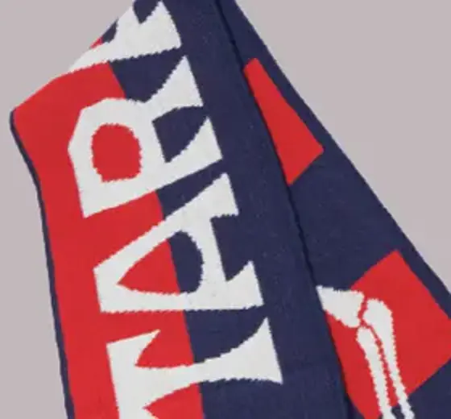
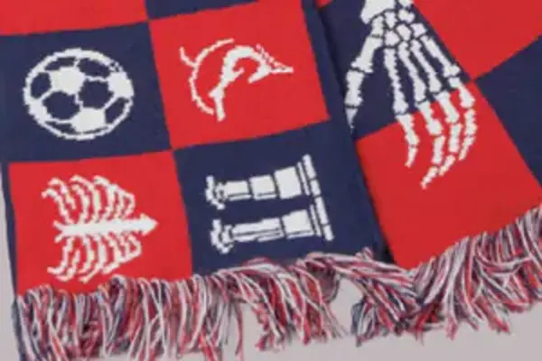
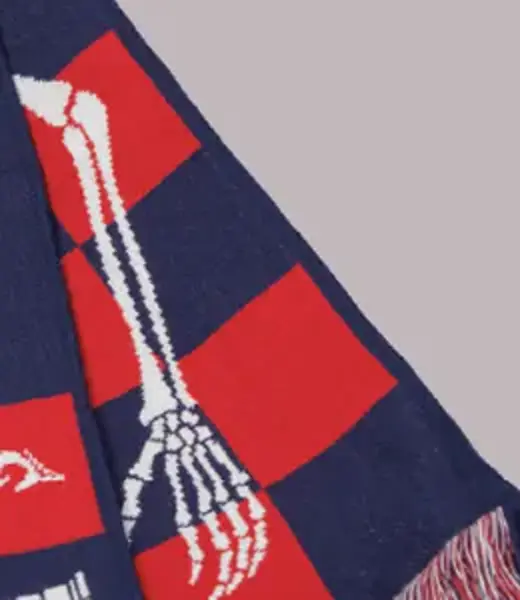
Si porta al collo come si porta una squadra. Solo che la squadra e' la citta', e non gioca in nessun campionato.
Il pallone, il delfino di Taras, la lisca, le colonne doriche. Quello che resta di Taranto quando la riduci a quattro segni.
Ossa, non muscoli. Perche' quello che tiene in piedi una citta' di solito non si vede.
Sta nel catalogo a 25 €. Te lo mettiamo nel carrello e ne parliamo in DM.
Un nostro pezzo
Stampa A3 su carta opaca 250 grammi. Una faccia che sta per metà sotto.
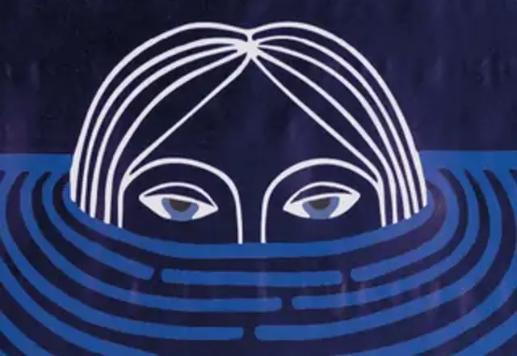
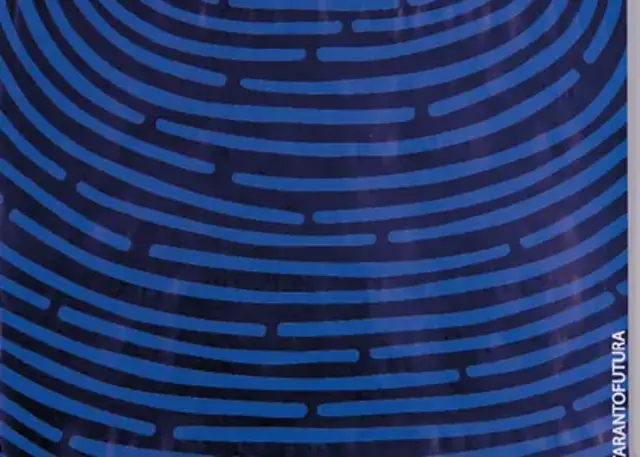
Tutto il resto e' sommerso. E' la parte che decide se ti guarda o no.
Righe concentriche, come un'impronta digitale. Il mare qui non e' uno sfondo: e' una cosa che ti si stringe addosso.
Sta nel catalogo a 10 €. Te lo mettiamo nel carrello e ne parliamo in DM.
Un nostro pezzo
Stampa A3. Quattro venti, quattro facce di marmo prese dai musei e rimesse a colori.
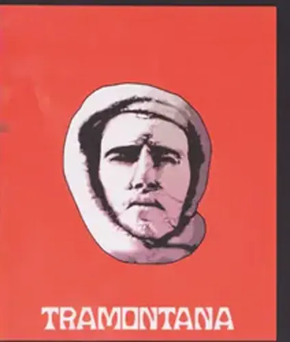
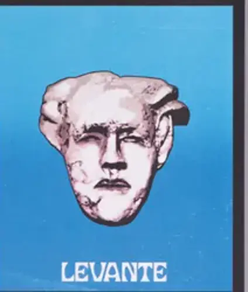
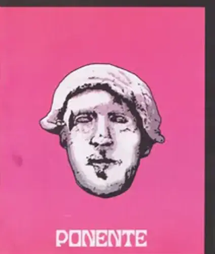
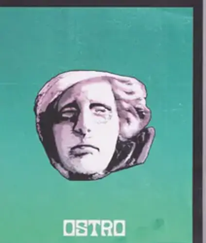
Quella che scende da nord e ti pulisce l'aria. Arriva d'inverno e porta via la foschia: le giornate in cui si vedono le Murge sono merito suo.
Viene dal mare aperto e porta l'acqua. E' il vento che alza il Mar Grande e tiene le barche legate.
Da terra verso il mare. Spinge fuori, e infatti i pescatori lo aspettano per uscire.
Il vento del sud, caldo. Quello che porta la sabbia e lascia tutto giallo sulle macchine.
Sta nel catalogo a 10 €. Te lo mettiamo nel carrello e ne parliamo in DM.
Un nostro pezzo
Stampa A3 in edizione limitata, per la notte di Sant’Erasmo.
Sant'Erasmo protegge chi va per mare, e la sua notte a Taranto e' una festa che dura da sempre. Qui l'aureola non sta sopra un santo di gesso: sta sopra uno di qua, con la giacca e il timone in mano.
Sta nel catalogo a 10 €. Te lo mettiamo nel carrello e ne parliamo in DM.
Qui finiranno i pezzi fatti insieme ad altre realtà: la foto davanti, il logo di chi ci ha messo le mani girando la carta.
Ci stiamo lavorando.
Cosa facciamo per la città
NZACC è il nostro magazine: interviste, foto, illustrazioni e un pezzo di città per volta. Si sfoglia qui, intero e gratis. La copia stampata non si vende: gira alle serate, finché ce n'è.
Fido Guido, la storia della musica in tarantino, Com'è profondo il mare, enigmistica futura.
Il primo numero, quello da cui è partito tutto. La carta è finita da un pezzo, il numero resta qui.
Il banco
Il totale è indicativo: l'eventuale spedizione la concordiamo insieme dopo la richiesta.